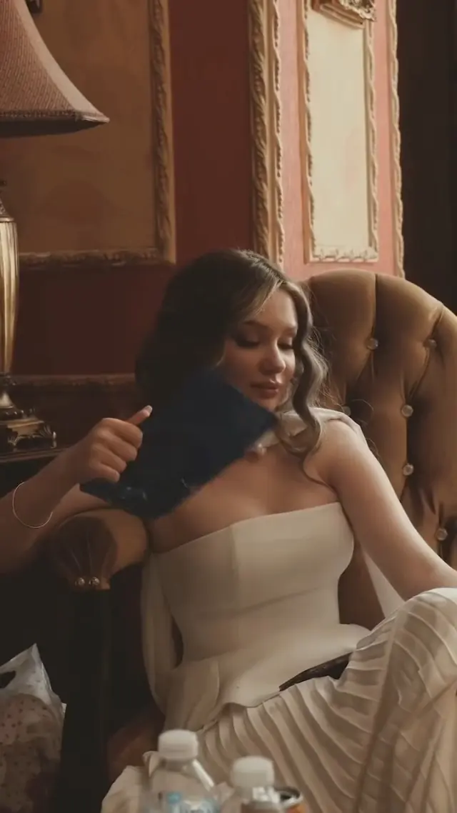
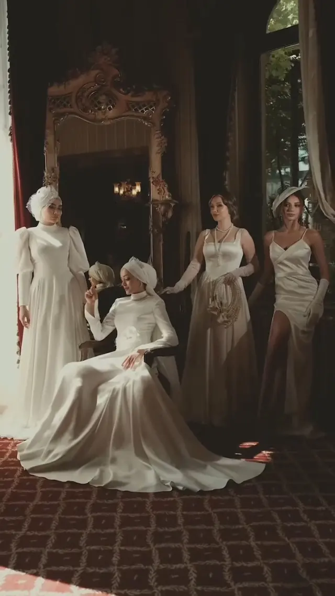
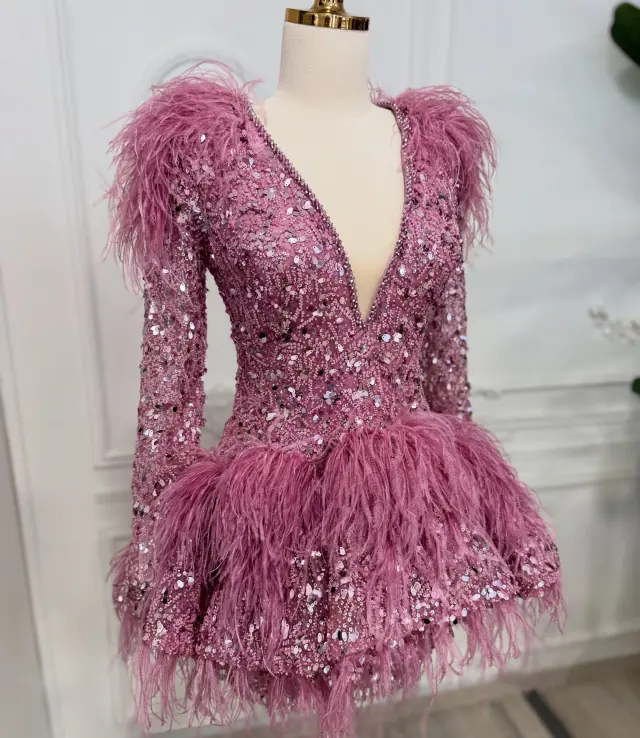
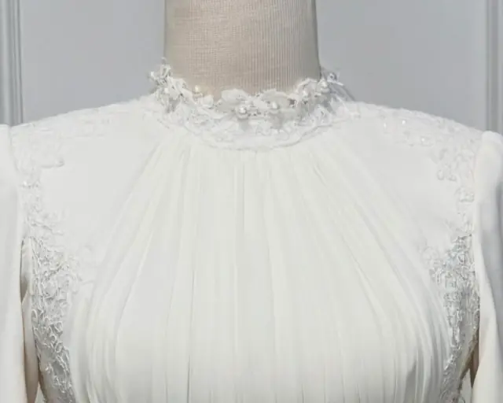
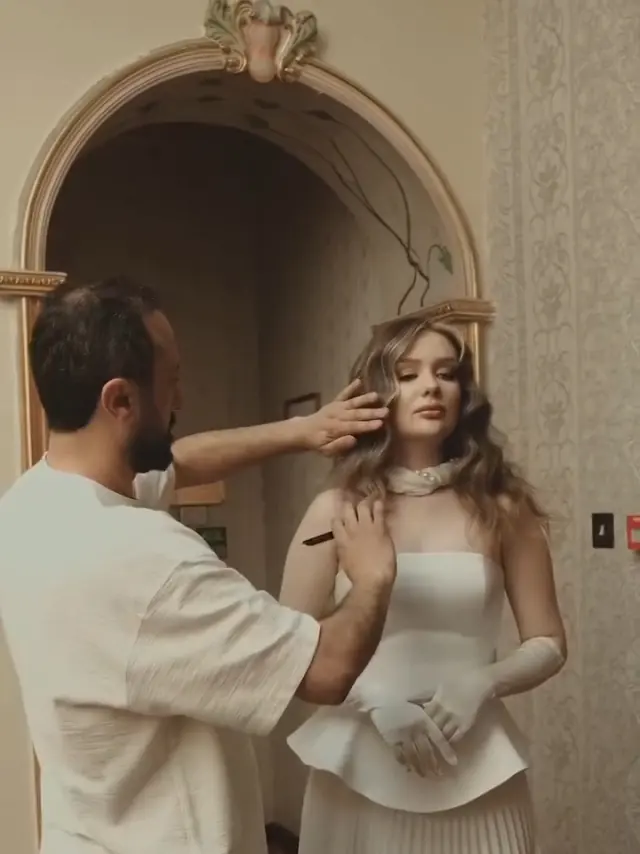

- Luxury Bridal & Couture
- Özel davet elbiseleri
- Ümraniye, İstanbul

Hayalinizdeki gelinlik, atölyeden size özel.
Tesettür ve açık gelinlikler, taş ve boncuk işlemeli kına kaftanları, nişan ve after elbiseleri. Satılık, kiralık ya da size özel dikim.
Design House
Her tasarım kendi hikâyesiyle başlar. Kumaş seçimi, prova süreci ve ince işçilikle yalnızca size ait bir görünüm ortaya çıkar.
Zarif ve ulaşılabilir. Satılık, kiralık ya da size özel dikim.

KoleksiyonlarNe dikiyoruz
-

01Gelinlik
Tesettür ve açık kesim. Satılık, kiralık ya da size özel dikim.
-
 02
02Kına ve kaftan
Taş, boncuk ve sırma işlemeli kaftanlar, bindallılar. Kiralama seçeneğiyle.
Bir kaftanın hikâyesi -
 03
03Nişan ve nikâh
Sipariş üzerine, 36-40 beden aralığında, farklı renk seçenekleriyle.
-

04After ve davet
Pul, tüy ve ışıltı. Gecenin enerjisine göre seçilen kiralık modeller.
Özel elişlemeYakından bakın
Taş, boncuk, sırma ve dantel. Her detay kusursuzluğu hedefleyerek işleniyor; en iyisi showroomda elinizle dokunmak.

Gümüş saçakSiyah kadife kaftan

Altın sırmaSiyah kadife kaftan

Boncuk dizisiLacivert kadife kaftan

Dantel kolKapalı kesim beyaz elbise

İnci yakaKapalı kesim beyaz elbise
AtölyeAtölyeden size özel

- 1
Showroom görüşmesi
Ümraniye'deki showroomda modelleri, kumaşları ve renkleri birlikte inceliyoruz.
- 2
Ölçü ve kumaş
Satılık, kiralık ya da özel dikim: size uyan yolu seçiyoruz. Özel dikimde ölçü alınır, kumaş seçilir.
- 3
Prova
Elbise üzerinizde şekillenir, düzeltmeler provada yapılır.
- 4
Teslim
Elbiseniz özel gününüze hazır. Şehir dışındaysanız online dikimi sorun.
GelinlerimizSizden gelenler

Kınanın zarafeti, Büşra gelinimizin güzelliğiyle bambaşka.


HizmetlerSize uyan yol
- Satılık
- Gelinlik, nişan ve nikâh elbiseleri.
- Kiralık
- Kına kaftanları, bindallılar, after elbiseleri.
- Özel dikim
- Kişiye özel tasarım, ölçünüze göre.
- Online dikim
- İstanbul dışından da sipariş verebilirsiniz.
Showroom randevunuzu oluşturun
Ümraniye, İstanbul. Gelmeden önce yazın, size ayrılan saatte modeller hazır olsun. Açık adresi mesajla paylaşıyoruz.